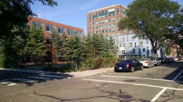
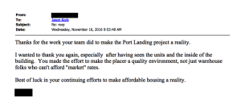

The walk from the heart of Central Square to 131 Harvard Street, the home of Port Landing is deceptively short. Although separated by a mere ten minutes the transition into The Port, or Area 4, is sharp. Niche brunch spots, graffiti murals, and glass encased gyms become average brick and mortar buildings. A shiny new playground passes by to my right. A Cambridge Residents Alliance van sits parked along the street. The grinning faces of people of color are displayed on large apartment flyers, encouraging applications.
The sharp demarcation is reflective of larger forces that have resulted in increased development and housing prices in Central Square/Kendall over the past decade or so. Included in these forces are rent deregulation of 1994, the increasing cost of land and an influx of tech companies and their employees. A review can be found in this BuQuad article from 2013.
Another way to describe what we see in Area 4 is gentrification, a term first coined by Sociologist Ruth Glass in 1964. She defines it as the “process of neighborhood change that results in the replacement of lower income residents with higher income ones.” Increasing the amount of affordable housing is one way to combat the displacement associated with gentrification.
Enter: Port Landing. Port Landing is a 20 unit development with 100% affordable housing. While it is an attempt to create space in Cambridge for low and middle-income housing, Port Landing was made possible via a complex history directly intertwined with a Biotech development company.
In order to build an office building on Broadway St. the organization was contracted to donate a large sum of money to the community of The Port and a parcel of land at 131 Harvard St. was deed restricted for community use and returned to the community. Due to an unfortunate series of mismanagement, the land sat empty and unused for years. The land was eventually placed on the market, but the deed restriction meant the land could only be used as affordable housing, a community park, community garden etc. This drastically lowered the cost of the land and presented an opportunity for Jason Korb and his partners at CapStone Communities LLC to build Port Landing.

Even with the affordable price of land, making Port Landing financially feasible required a complex combination of low-income housing tax credits (LIHTC), investment tax credits, and soft debt. LIHTC specifically are a government incentive for private investment and financing of affordable housing. To some estimates LIHTC support 90% of all affordable housing in the US. Mr. Korb is concerned that these essential tax credits may be on the chopping block for HUDS and the current administration, as they are considered to be entitlements.
According to Mr. Korb rather than discouraging public-private partnerships and investment in affordable and mixed-income housing, we should be encouraging it. Policies like inclusionary zoning [linking the production of affordable housing to market price housing] and density bonuses [allow developers of market rate housing to increase the amount of housing built if affordable housing is included] are important ways to incentivize the creation of more affordable housing.
Korb and his partner at CapStone have invested the same amount of attention to the design of Port Landing as they have to its financing. The building is a beautiful blend of the brick and modern sleek steel. The interior is intentionally designed. A giant wallpaper map of Cambridge greets you as soon as you walk in and portraits of members of the community line every hallway. One community member put it this way:

Korb says he is just happy to provide “homes worthy of the people who live in them.”


PC: Patrick Rogers Photography
listen to our interview here:


{kind=link}
{kind=link}
{kind=link}